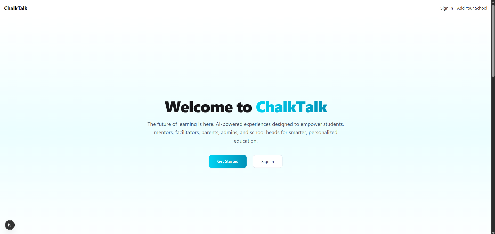
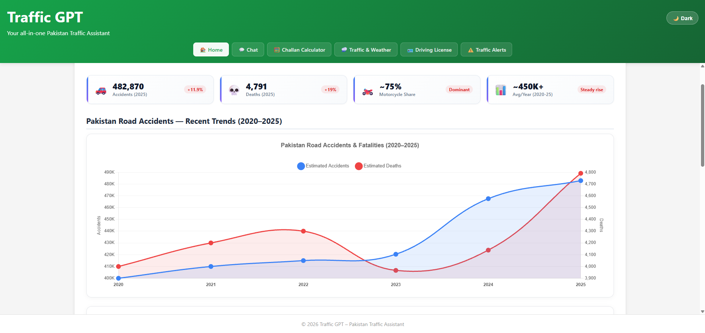
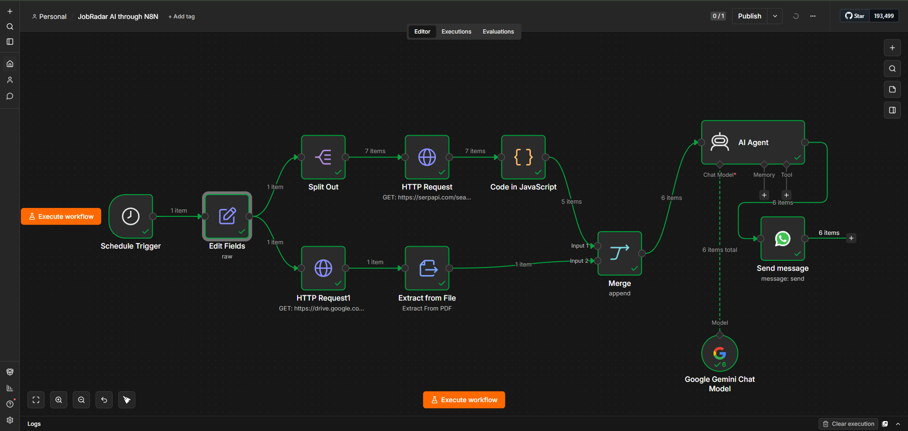

Gallery

Vision 360 - E-Services & Technologies Pvt Ltd
A quick look at Vision 360 - AI-powered multi-camera surveillance and analytics platform with real-time computer vision detection (PPE compliance, theft, attendance, and more), built on Django REST Framework, Celery, and React.

YT-Comments Sentiment Analysis using MLOps
A quick look at the YouTube Comment Sentiment Analyzer — real-time sentiment detection, ML model serving, and automated MLOps deployment in action.

Chalktalk - E-Services & Technologies Pvt Ltd
A quick look at Chalktalk - AI-powered educational platform with real-time interactive learning and personalized content delivery, built on Django REST Framework, Celery, and React.

ShurukerAi-FYP
A quick look at the ShurukerAi platform — AI business assistant, freelancer marketplace, and real-time chat in action.

Traffic-GPT
A look at the Traffic-GPT assistant for traffic information, civic services, and intelligent city analytics.

JobRadar AI
A look at the JobRadar AI system for intelligent job matching, personalized career recommendations, and automated WhatsApp job alerts.

The Next School Chatbot - Align STEM Club
A look at The Next School - FB Area Campus Chatbot for educational support, student engagement, and personalized learning.